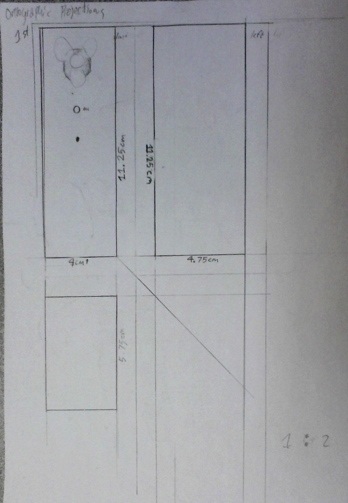
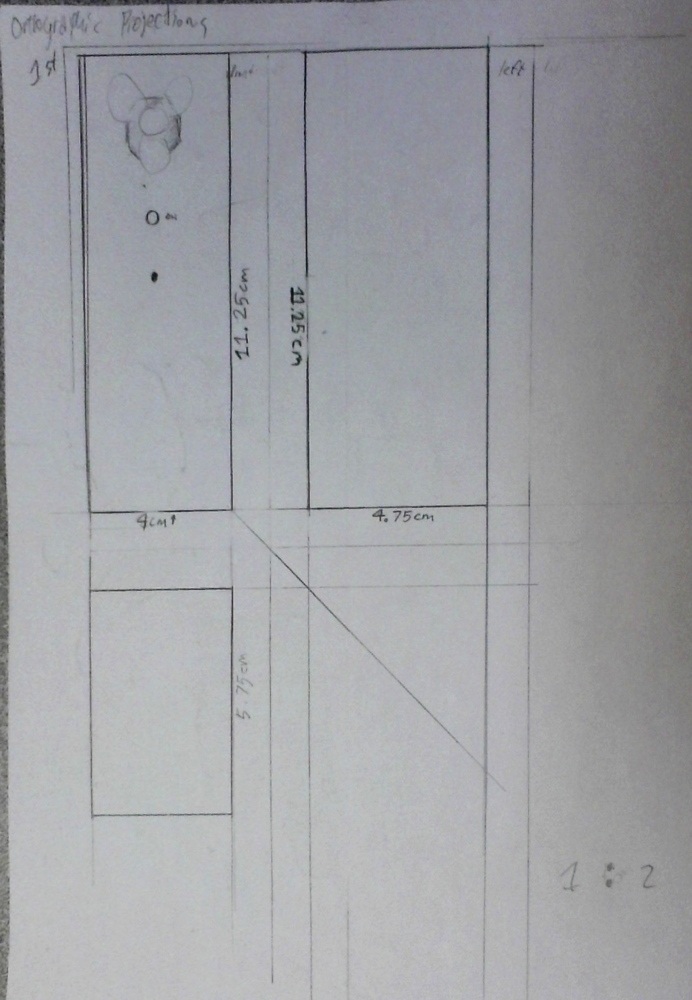

The Building Process

The process of making the hand fan involved a couple different things. For starters, wiring the Hand Fan proved to be unexpectedly challenging, with me learning the hard way that one simple mistake could mess everything up. I made a couple sketches of my expectations for the final product below (1 point perspective, orthographic projection, and tinkercad model).
 
